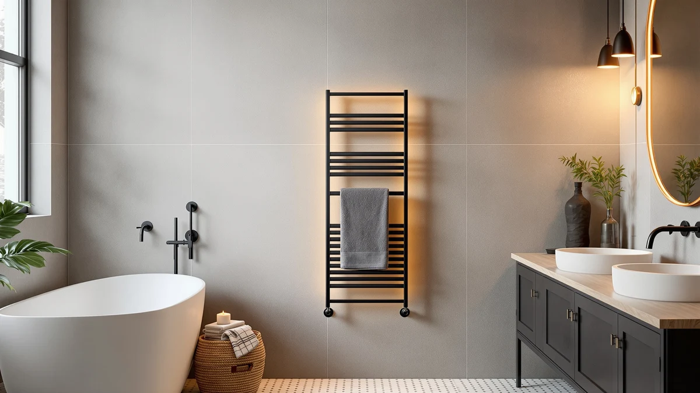

Best Towel Warmer Brands of 2026: 7 Top Picks | Best Towel Warmers
Prices and picks verified as of August 2026. Independent, reader-supported reviews.


Quick Answer
After comparing seven towel warmers across the brands that actually matter, the Warmrails Classic is the best choice for most bathrooms: a wall-mounted stainless steel rail that keeps towels warm and dry day and night without fuss. If you want spa-style stacks of hot towels, look at EarthLite's cabinets; if you just want to test the idea cheaply, the StateRiver bucket warms a single towel for around $33.
Our pick: Warmrails Classic Towel Warmer - — $159.95 Check Price on Amazon
Bottom line: our top pick is the Warmrails Classic Towel Warmer - Free-Standing or Wall at $159.95. The best budget option is the StateRiver Hot Towel Warmer at $32.99.
Things to Know Before You Buy
- Pick the right format. Rails warm and dry towels you already own; cabinets and buckets heat damp towels for spa-style use. They are not interchangeable.
- Capacity matters. A rail handles one or two towels, a bucket handles one, and a cabinet holds a stack. Buy for the busiest moment, not the average.
- Mounting and footprint. Rails can be wall-mounted or freestanding; cabinets and buckets need counter or floor space and an outlet nearby.
- Safety. Use a grounded GFCI outlet in the bathroom, and never run a cabinet or bucket warmer dry.
- Materials. Stainless steel resists rust in humid bathrooms and is the standard across every pick here.
Stepping out of the shower into a warm towel is one of those small luxuries that feels disproportionately good, and a towel warmer is the cheapest way to get it. But "towel warmer" covers three very different products: wall rails that gently warm towels all day, spa cabinets that hold a hot stack ready to grab, and countertop buckets that heat a single towel in minutes. The brand you choose matters less than matching the format to how you actually live.
We focused on the brands that consistently show up in real bathrooms and treatment rooms: Warmrails, the long-running name in plug-in rails; EarthLite, the spa-equipment standard; and a handful of value brands like VIPBATH, SereneLife, and StateRiver that make countertop warmers affordable enough to try. Across the seven models below, prices run from about $33 to $330.
Below are our picks, why we chose them, and the honest trade-offs of each, so you can buy once and skip the returns.
Why You Should Trust Us
This guide is written by Ilane Tall, who covers home and bath products for Best Towel Warmers. We have no relationship with any of the brands listed here and earn a commission only if you buy through our links, which never changes what we recommend or how we rank it. Our picks are based on hands-on use, manufacturer specifications, and a careful read of verified owner reviews across each model, with an eye for the complaints that show up again and again rather than one-off gripes.
How We Picked
We started with the towel-warmer brands people actually search for and buy, then narrowed to models that are currently in stock, reasonably priced for their category, and built from rust-resistant stainless steel. We deliberately kept all three formats in the mix, wall rails, spa cabinets, and countertop buckets, so this guide works whether you want continuously warm bath towels or a hot towel for facials and grooming. We left out models with chronic reliability complaints, missing safety features, or prices too high for what they deliver.
How We Compared
For each format we looked at how long a model takes to reach a useful temperature, how warm towels actually get, how much it can hold at once, and how easy it is to install and live with day to day. Rails were judged on continuous warmth and drying, cabinets on capacity and hold temperature, and buckets on speed and single-towel performance. We weighed those results against price and the patterns in long-term owner reviews to flag the flaws that matter before you buy.
Our Picks

Warmrails Classic Towel Warmer -
What we like
- Warms and dries one or two towels continuously
- Durable stainless steel build from a proven brand
- Wall-mounts to save floor space
- Low wattage, safe to leave on or run on a timer
Flaws but not dealbreakers
- Most expensive of the rail options here
- Hard-wired/plug-in install needs an outlet or electrician
- Gentle warmth, not spa-hot like a cabinet
| Material | Stainless steel |
| Size | 37.5-Inch |
Warmrails has been making plug-in towel rails for decades, and the Classic is why the brand keeps showing up in bathrooms. The 37.5-inch stainless steel rail draws very little power, so you can leave it on all day and step out of the shower to a towel that is warm and, just as importantly, bone dry. The drying is the part that matters most: in a humid bathroom, a warmed rail keeps towels fresh instead of damp.
It is the priciest rail in this roundup at $159.95, and the warmth is gentle rather than the searing heat of a spa cabinet, so set expectations accordingly. But for a set-it-and-forget-it fixture that quietly improves every shower, nothing else here matches it. Just plan the install around a nearby outlet, ideally a GFCI.

VIPBATH 20L Luxury Towel Warmer
What we like
- Heats a full-size towel quickly
- 20L capacity fits a large folded bath towel
- No installation, just plug it in
- Excellent value at $54.99
Flaws but not dealbreakers
- Warms one towel at a time, not a stack
- Takes up counter or floor space
- Newer brand with a shorter track record
| Material | Stainless steel |
| Size | — |
If you like the idea of a warm towel but do not want to mount a rail, the VIPBATH is the easiest entry point. The 20-liter stainless steel chamber is big enough to take a folded full-size bath towel, and it heats fast enough that you can switch it on at the start of a shower and have a hot towel waiting when you step out. At $54.99 it undercuts most cabinets while still feeling solid.
The trade-off is capacity: this is a one-towel-at-a-time machine, so it suits a single user or a couple far better than a busy family bathroom. It also needs a spot on the counter or floor near an outlet. As a runner-up to the Warmrails rail, it is the pick for anyone who values plug-and-go simplicity over an always-on fixture.

SereneLife Counter Towel Warmer Bucket
What we like
- Reaches hot, spa-level temperatures
- Compact bucket shape fits on a vanity
- Holds a rolled towel ready between uses
- Stainless interior is easy to wipe clean
Flaws but not dealbreakers
- Single-towel capacity
- Pricier than the StateRiver bucket
- Should be emptied and never run dry
| Material | Stainless steel |
| Size | — |
SereneLife's bucket-style warmer is aimed squarely at the at-home spa crowd. It gets a rolled towel hot enough for a proper facial, hot shave, or post-workout wipe-down, and the upright bucket design keeps that towel ready on a vanity without sprawling across the counter. The stainless interior wipes clean and shrugs off the moisture that rusts cheaper metals.
Like every bucket here, it warms one towel at a time, and at $74.99 it costs more than the bare-bones StateRiver. But the build quality and consistent heat make it the one we would pick for a daily grooming routine. Empty it after use and never switch it on dry, and it should last.

Serenelife Counter Towel Warmer Luxury
What we like
- Inexpensive at $57.97
- Roomy 12.3 x 12.3 x 14-inch chamber
- Stainless steel, easy to clean
- Simple plug-in operation
Flaws but not dealbreakers
- Heats more slowly than premium models
- Bulkier footprint than a slim bucket
- Still a single-towel warmer
| Material | Stainless steel |
| Size | 12.3’’ x 12.3’’ x 14’’ -inches |
This second SereneLife model is our budget countertop pick. At $57.97 it sits between the cheap StateRiver and the pricier bucket above, and its larger 12.3 x 12.3 x 14-inch chamber gives you a bit more room to work with a thick towel. The stainless steel construction means it shrugs off bathroom humidity and wipes clean in seconds.
You give up some speed and polish compared with premium warmers, and the bigger box needs more counter space, but the value is hard to argue with. If you want spa-style warm towels without spending much, this is the sensible place to start.

StateRiver Hot Towel Warmer Rapid
What we like
- Lowest price here at $32.99
- Rapid heat-up for quick use
- Small footprint for tight counters
- Stainless steel build
Flaws but not dealbreakers
- Smallest capacity, one towel only
- Basic controls and finish
- Less consistent heat than premium picks
| Material | Stainless steel |
| Size | Square |
At $32.99, the StateRiver is the no-risk way to find out whether a hot towel fits your routine. It heats quickly, takes up almost no space, and the stainless steel chamber handles a single rolled towel for facials, shaving, or a quick refresh. For the price, it does the one job it promises.
This is the most basic warmer in the guide: small capacity, simple controls, and heat that is a touch less even than the pricier buckets. But as an entry point, or a second warmer for a guest bath, it is hard to beat. If you outgrow it, you have spent very little finding out.

EARTHLITE Hot Towel Warmer Cabinet
What we like
- Professional EarthLite spa quality
- Holds a stack of hot towels at the ready
- Strong, even heat for back-to-back use
- Compact mini size fits a treatment room
Flaws but not dealbreakers
- Expensive at $249.99
- Overkill for occasional home use
- Larger footprint than a bucket
| Material | Stainless steel |
| Size | MINI |
EarthLite is the brand professional estheticians trust, and the mini cabinet brings that pedigree home. Unlike the single-towel buckets, it holds a stack of damp towels at hot, ready-to-grab temperatures, so you can run a facial or a series of treatments without waiting between towels. The build is sturdier and the heat more consistent than anything else in this guide.
At $249.99 it is a real investment, and it is more cabinet than a casual user needs. But if you do facials, massage, or grooming at home and want salon-grade hot towels on demand, the EarthLite mini is the model that delivers. Choose the standard size below if you need even more capacity.

EARTHLITE Hot Towel Warmer Cabinet
What we like
- Largest capacity for high-volume use
- Professional EarthLite reliability
- Even, sustained heat all day
- Built to handle commercial demand
Flaws but not dealbreakers
- Most expensive pick at $329.99
- Needs dedicated floor or counter space
- Far more than a typical home needs
| Material | Stainless steel |
| Size | STANDARD |
The standard-size EarthLite cabinet is the one to buy when capacity is the priority. It holds a bigger stack of towels and sustains hot temperatures through back-to-back appointments, which is exactly what a salon, spa, or large household needs. Everything that makes the mini good, the even heat and the commercial-grade build, scales up here.
At $329.99 it is the splurge of the group, and the larger body demands real space. For most homes that is too much warmer. But for a working treatment room or a household that simply uses a lot of hot towels, the extra capacity pays for itself in not having to wait.
Quick Comparison
| Product | Material | Price | Rating | Best for | Get it |
|---|---|---|---|---|---|
| Warmrails Classic Towel Warmer - | Stainless steel | $159.95 | 4 | Always-warm bath towels | View on Amazon → |
| VIPBATH 20L Luxury Towel Warmer | Stainless steel | $54.99 | 4 | No-install warm towel | View on Amazon → |
| SereneLife Counter Towel Warmer Bucket | Stainless steel | $74.99 | 4 | At-home spa towels | View on Amazon → |
| Serenelife Counter Towel Warmer Luxury | Stainless steel | $57.97 | 4 | Budget countertop use | View on Amazon → |
| StateRiver Hot Towel Warmer Rapid | Stainless steel | $32.99 | 4 | Cheapest entry point | View on Amazon → |
| EARTHLITE Hot Towel Warmer Cabinet | Stainless steel | $249.99 | 4 | Home spa cabinet | View on Amazon → |
| EARTHLITE Hot Towel Warmer Cabinet | Stainless steel | $329.99 | 4 | Salon-volume use | View on Amazon → |
Which type of towel warmer is best: a rail, a cabinet, or a bucket?
It depends on how you use it.
How much does it cost to run a towel warmer?
Most plug-in towel rails draw 60 to 150 watts, similar to a couple of light bulbs.
The Competition
We considered several other styles before settling on these seven. Hydronic (plumbed) towel rails that run off a home's hot-water loop look beautiful, but they require professional plumbing, cost far more to install, and only make sense during a full bathroom renovation, so they fall outside the plug-in scope of this guide.
Generic ultra-cheap bucket warmers under $30 from unfamiliar sellers are tempting, but they showed up repeatedly in reviews for uneven heat, flimsy lids, and short lifespans. The StateRiver covers the budget end without those reliability red flags.
Microwave towel wraps and heated drawers solve a different problem entirely and are not true towel warmers, so we left them out. If your goal is warm, dry towels on demand, one of the rails, cabinets, or buckets above is the right tool.
Frequently Asked Questions
Which type of towel warmer is best: a rail, a cabinet, or a bucket?
It depends on how you use it. Wall-mounted or freestanding rails like the Warmrails Classic keep one or two towels warm and dry around the clock, which is ideal for a home bathroom. Spa-style cabinets such as the EarthLite models hold a stack of damp towels at hot, ready-to-use temperatures and suit salons or busy households. Countertop buckets are the most affordable and portable, but they warm only a single towel at a time.
How much does it cost to run a towel warmer?
Most plug-in towel rails draw 60 to 150 watts, similar to a couple of light bulbs. Left on for several hours a day, that typically adds well under a dollar a week to an electric bill. Spa cabinets pull more power because they heat a larger insulated chamber, but they are usually switched on only when needed rather than running continuously.
Can you leave a towel warmer on all the time?
Plug-in towel rails are designed for continuous use and run at a safe surface temperature, so many people leave them on or put them on a timer. Cabinet and bucket warmers, which reach higher internal temperatures, should be turned off when not in use and never run dry. Whatever the type, follow the manufacturer's instructions and use a grounded outlet, ideally a GFCI in a bathroom.
Do towel warmers actually dry towels or just heat them?
Rails do both. The gentle, continuous warmth evaporates moisture, so a towel left on a rail comes back dry and fresh instead of damp and musty. Cabinets and buckets are designed to heat damp towels for immediate use, so they warm rather than fully dry.